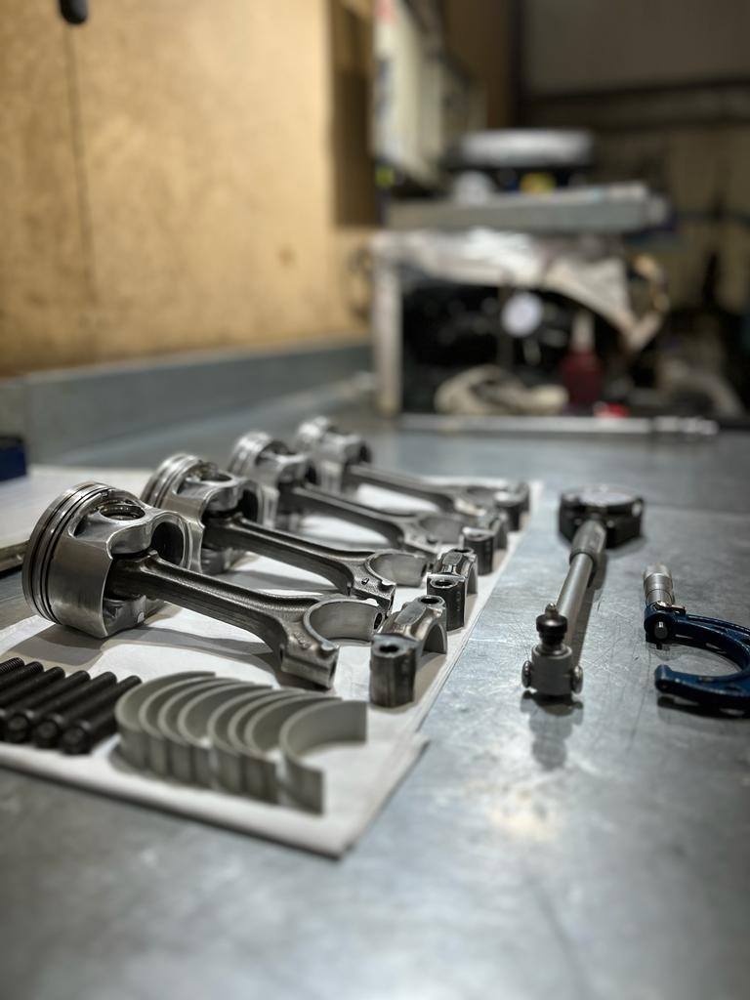
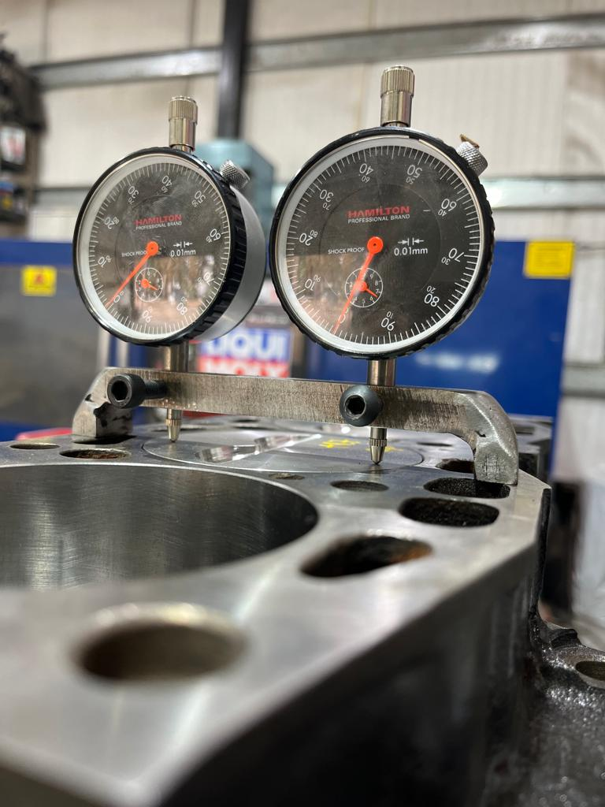
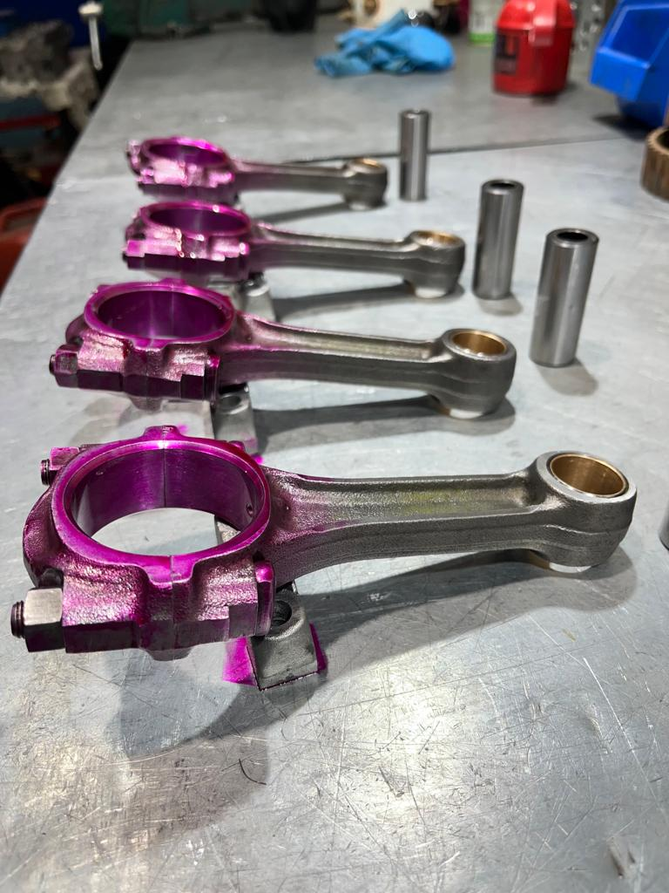
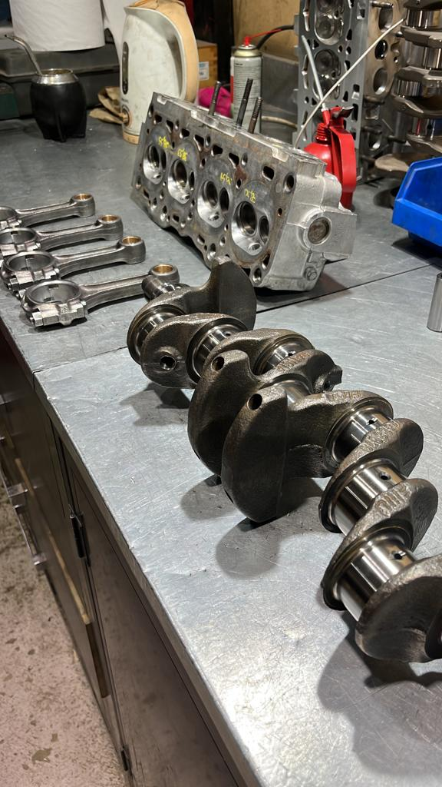
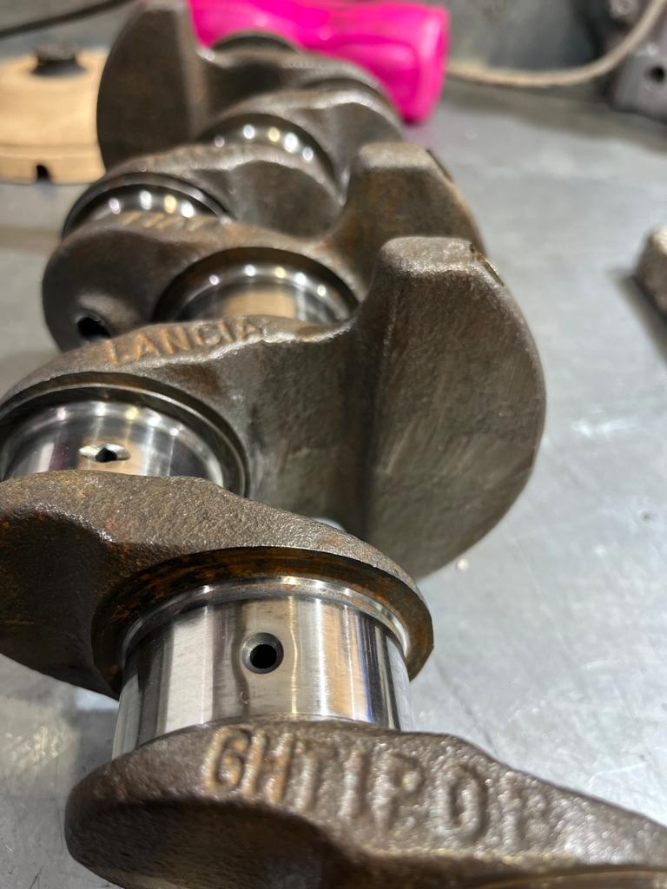
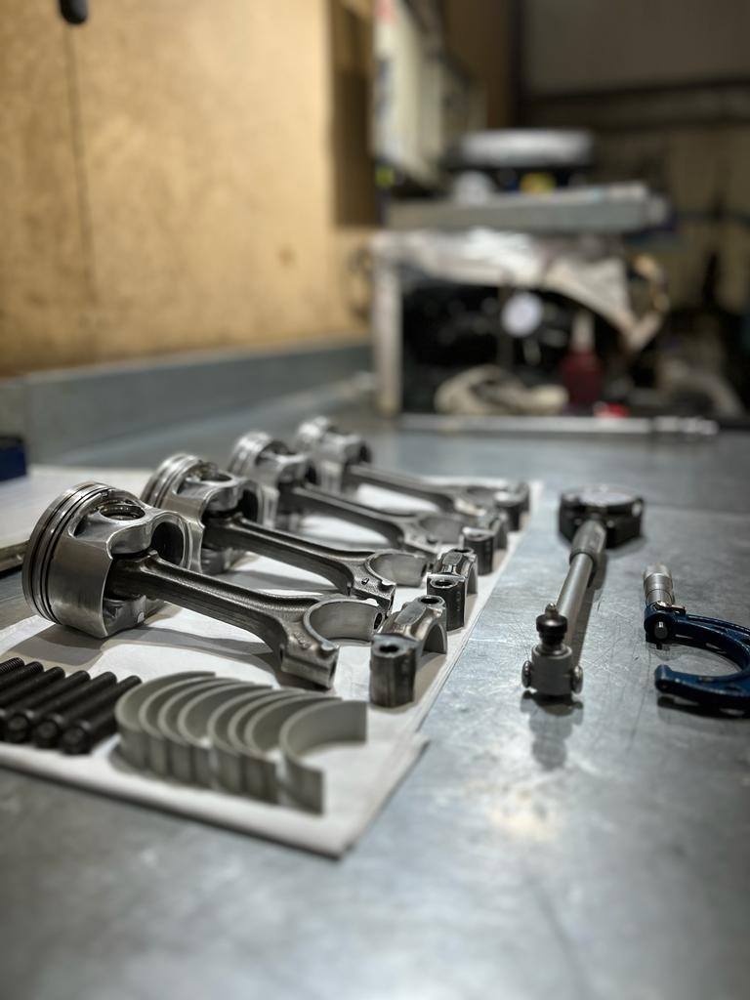
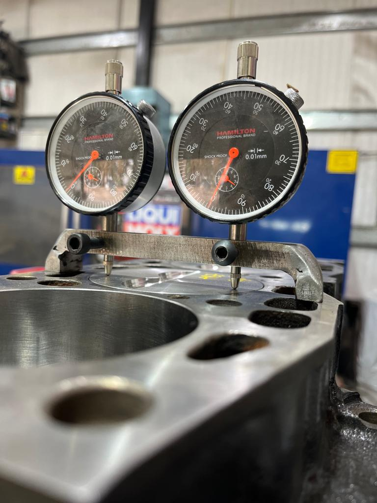
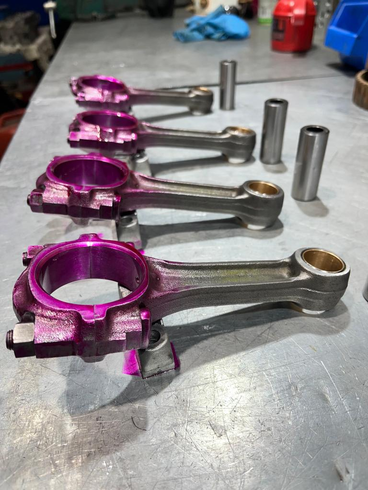
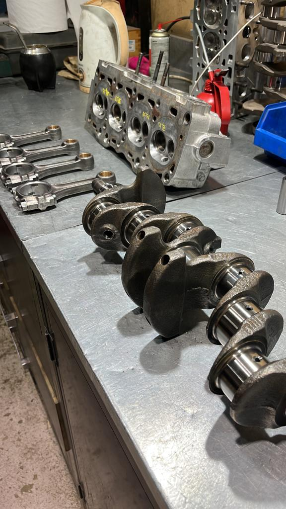
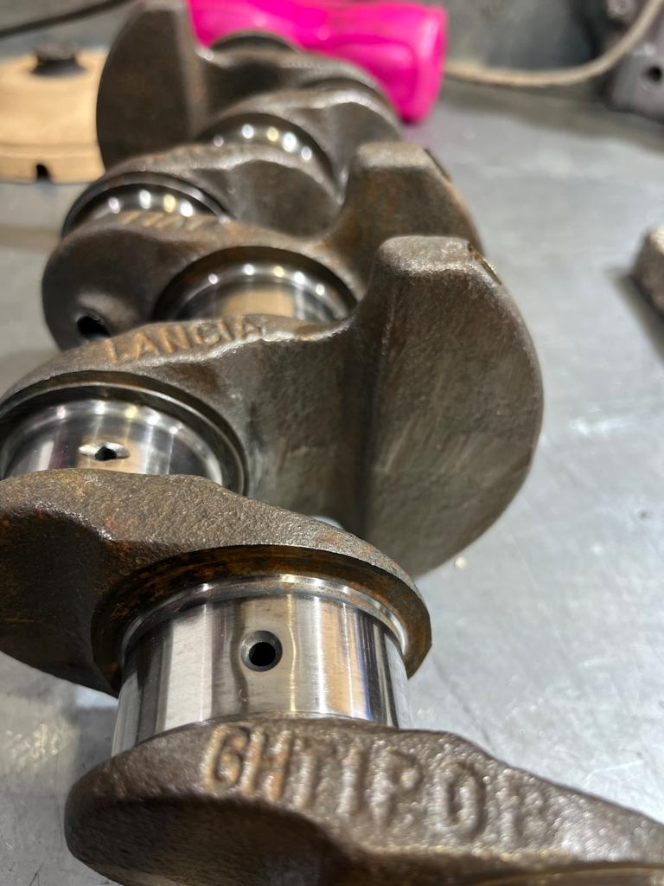

SERVICIOS / MOTORES
MOTORES DIESEL/NAFTERO MECANICA LIVIANA O PESADA
El rectificado de motores es un proceso fundamental en la industria automotriz que busca restaurar la geometría y las dimensiones originales de las piezas internas del motor, como cilindros, pistones y árboles de levas. Este procedimiento se realiza mediante el uso de herramientas abrasivas especializadas que eliminan pequeñas cantidades de material de las superficies dañadas o desgastadas. El rectificado es crucial para mejorar el rendimiento del motor al garantizar un ajuste preciso de las piezas, reducir la fricción y mejorar la eficiencia en la combustión. Además, este proceso contribuye a prolongar la vida útil del motor y a mantener sus prestaciones óptimas, asegurando un funcionamiento suave y confiable del vehículo.
 








